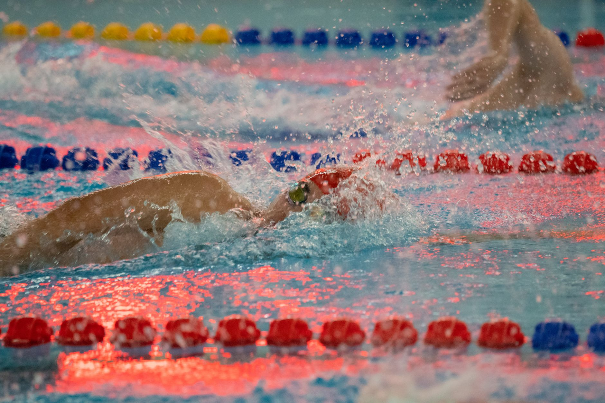

Elite Competition Shines a Light on the Path Ahead
When a major USA Swimming event comes to town — like the recent competition held at the North Natomas Aquatic Complex in Sacramento — it captures the attention of aquatic sports communities across the country. For families in Wesley Chapel, Land O' Lakes, and throughout the Tampa Bay area, events like these are more than just exciting to watch. They serve as a roadmap, showing young athletes what years of dedication, proper coaching, and consistent training can ultimately produce.
Whether your child is just learning their first flip turn or already competing at the club level, there is something deeply inspiring and instructive about witnessing elite swimmers perform at their best. The good news is that the qualities separating those competitors from the rest are not mystical — they are buildable, and they start at the youth level.
Lessons Young Swimmers Can Draw From Elite Competition
Watching high-level USA Swimming meets reveals patterns that every developing swimmer and their family should understand. These are not just performances — they are the results of intentional, long-term athlete development.
1. Technique Is the Foundation of Speed
Elite swimmers do not simply swim harder than everyone else — they swim smarter. Every stroke is refined, every turn is precise, and every breath is calculated. For young athletes training in the Tampa Bay area, this is a critical reminder that technical work done early in a swimmer's career pays dividends for years to come. Racing at full effort with poor mechanics only reinforces bad habits.
2. Mental Preparation Matters as Much as Physical Training
The composure that top swimmers display on the blocks before a race does not happen by accident. Young athletes often underestimate how much mental readiness contributes to performance. Visualization, race planning, and managing pre-race nerves are skills that can and should be practiced alongside yardage and drills.
3. Consistency Beats Intensity Every Time
Elite swimmers arrive at championships having built thousands of hours of steady, purposeful practice — not just a handful of intense weeks before a big meet. Families supporting young swimmers should value regular attendance and incremental progress over short bursts of motivation. The athletes standing on the podium at national events chose consistency for years before anyone was watching.
How Tampa Bay Families Can Apply These Lessons Today
You do not need to attend a national meet to begin building the habits that lead to elite performance. Right here in the Wesley Chapel and Land O' Lakes community, young swimmers have access to the coaching, pool time, and competitive opportunities needed to develop real skills.
- Commit to a structured club program that emphasizes technique and long-term athlete development over short-term results.
- Attend local and regional meets to build comfort with competitive environments before the stakes grow higher.
- Encourage your young athlete to watch elite competition, whether in person or online, and discuss what they observe with their coach.
- Prioritize rest and recovery just as seriously as practice attendance, because growth happens outside the pool too.
The Journey Begins Right Here
At Nexar Aquatic Academy, we believe that every young swimmer in the Tampa Bay area has the potential to grow into a confident, skilled, and competitive athlete. The elite performances showcased at events like the USA Swimming meet in Sacramento remind us why the fundamentals we teach every day truly matter. Championship swimming is built one practice at a time, and there is no better time to start than now.
If your child is ready to take their swimming seriously — or if they are just beginning to discover a love for the water — we invite your family to come see what dedicated, professional coaching looks like in Wesley Chapel. The path to elite competition starts with a single lap, and we are here to help your young athlete swim every one of them with purpose.
Ready to get in the water?
First practice is completely FREE — no commitment needed.